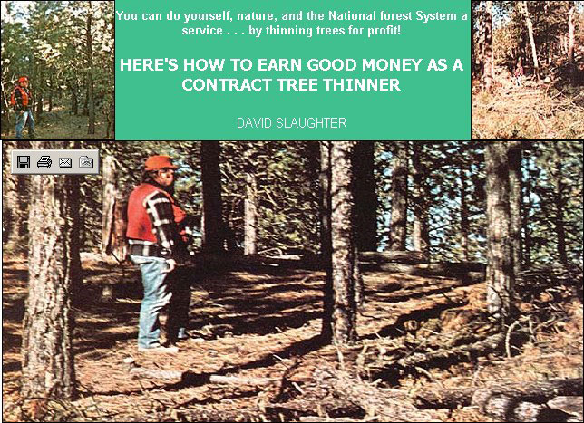

PHOTOS BY C. E. FERWEDA
In the top left photo, author David Slaughter surveys an overgrown section of national forest prior to thinning. Top right: thinning has begun (although the ""slash"" has yet to be cut and scattered). Above: The author stands in a properly thinned area of forest. Trees are spaced ten to twenty feet apart, dead limbs and boles have been disposed of in an acceptable manner.